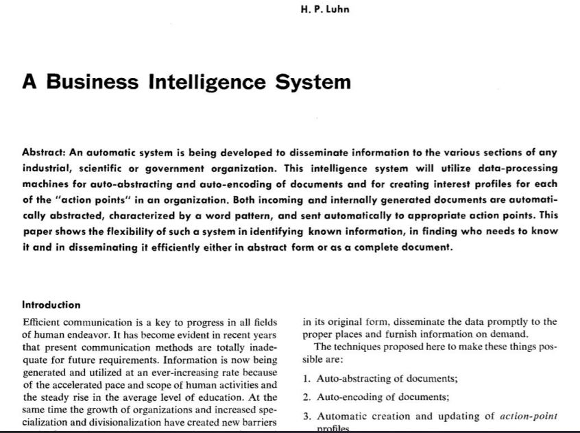
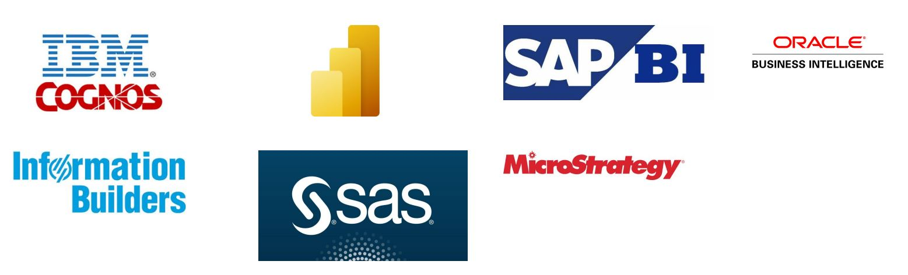
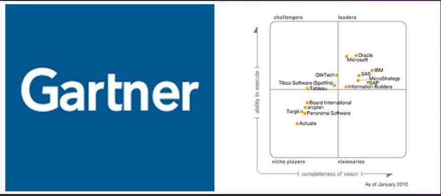
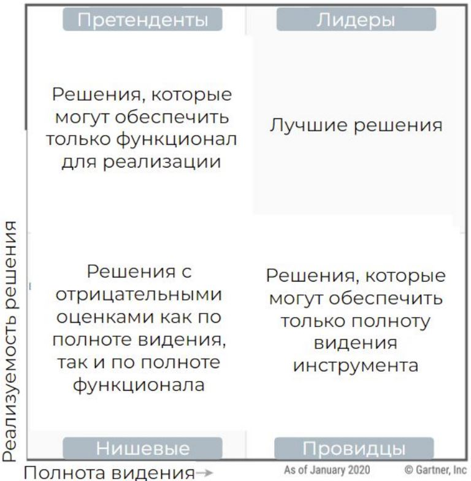
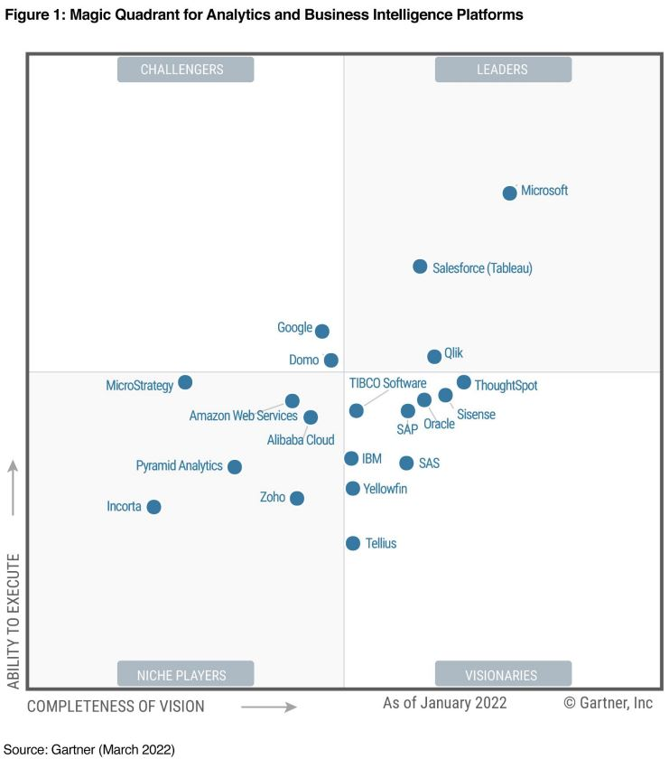
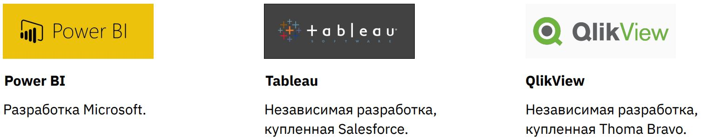
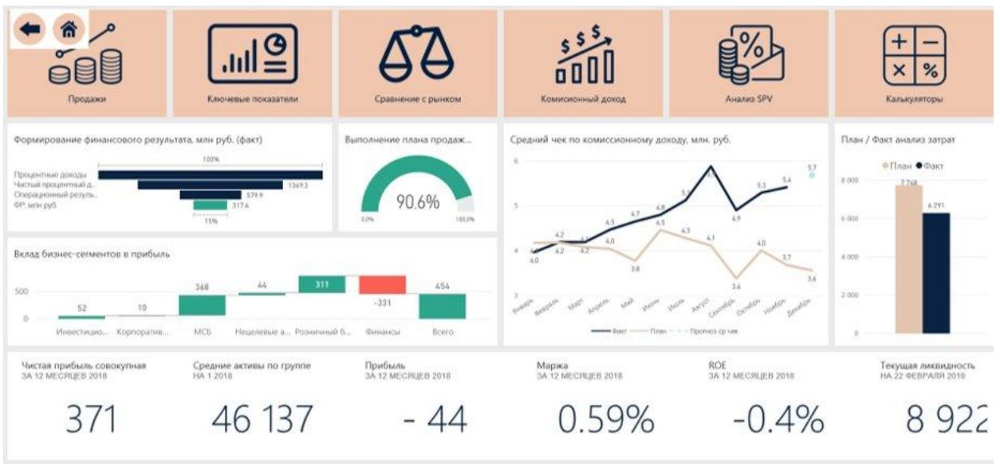
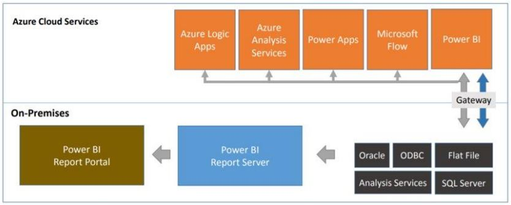

Какие есть решения на рынке BI
Мы разберем:
- Рынок и история BI
- Позиция Power BI на рынке
- Версии Power BI
- Power Query
Что такое BI и в чем его миссия?
Если просто, то BI - это Excel + Power Point в одном инструменте, где есть больше возможностей, чем в самих Excel и Power Point.
Если более научно, то BI - это автоматизация аналитических процессов для презентации данных в красивой форме.
BI расшифровывается как Business Intelligence и не переводится на русский. В проф сообществе так и говорят “биай”
Миссия BI
Миссия BI заключается в том, чтобы обеспечить организацию оперативными данными для помощи в принятии управленческих решений.
BI делает решения более понятными и объективными. Помогает принимать их быстрее, что сверхважно для любой современной организации.
Например в BI можно настроить push уведомления на ответственного сотрудника при наступлении какого-то события, чтобы он отреагировал на ситуацию сразу, а не после совещания.
История возникновения BI систем

Ганс Питер Лун — сотрудник IBM, одного из первых IT-гигантов. Часто его называют «отцом Business intelligence»
В 1958 году он написал статью «A Business Intelligence System»

В статье даётся определение BI:
«An automatic system… developed to disseminate information to the various sections of any industrial, scientific, or government organization»
«Это автоматизированная система, разработанная с целью распределения информации различных направлений деятельности любой индустриальной, научной или государственной организаций»
Аналитик Gartner Ховард Дреснер даёт близкое к современному определение систем BI: «концепты и методы, позволяющие улучшать процесс принятия бизнес - решений, благодаря использованию систем, помогающих преобразовать данные в факты»
2000-е
Активное появление решений по BI от различных компаний. Как независимых, так и крупных: Oracle, IBM, Microsoft

Появление квадранта Gartner, который оценивает уровень развития BI-систем на рубеже нулевых и десятых годов можно считать символической точкой развития BI систем в современном виде.
Gartner выпускает наиболее популярную классификацию BI систем.

Какие есть BI инструменты и как определить уровень их развития
Основной рейтинг BI инструментов выпускает компания Gartner
- Международная исследовательская компания
- Специализируется на рынке IT
- Основана в 1979 году
- Выпускает регулярные «рейтинги» IT-систем, в том числе и BI
- Рейтинги составляются в виде магического квадранта
- В 2009 году выиграла судебный иск по поводу легитимности магических квадрантов
- Все лидеры делают прессрелизы по факту выхода нового квадранта
2020 год

Как оценивается:

Полнота видения
- Насколько решение соответствует потребностям рынка?
- Какова стратегия продвижения системы?
- Как выстраивается стратегия продаж и ценообразования?
- Как развивается продукт? Применяются ли инновационные технологии?
- Соответствует ли решение задачам предприятий разного масштаба?
- Есть ли особенность географической стратегии и планы по развитию в других странах?
Реализуемость решения
- Насколько просто и удобно интегрировать систему в рабочий процесс?
- Что отличает платформу от конкурентов?
- Соответствуют ли решения практическим задачам пользователей?
- Продукт оперативно реагирует на тенденции рынка?
- Им комфортно пользоваться?
- Легко ли его обновлять?
- Какие особенности есть у техподдержки?
- Что говорят пользователи?

Лидеры рынка (большая тройка)

Power BI
- Разработка Microsoft
- Лидер квадранта Gartner последних лет
- Активно развивается с 2015 года
- Хорошо интегрируется с другими программами Microsoft
- Языки: DAX, Power Query, R, Python
Tableau
- Независимая разработка
- Близко к Power BI в квадранте Gartner все последние годы
- Исторический лидер до развития Power BI
- Компании, которые давно внедрили BI, часто до сих пор работают в Tableau
- В 2019 году куплена Salesforce
QlikView
- Независимая разработка
- Индивидуальный язык работы с данными
- Enterprise-решение
- Падает в рейтинге квадранта Gartner
- Куплена Tomas Bravo
Версии Power BI
Базовые версии
- Power BI Desktop – основной инструмент для разработки
- Power BI Pro – самый доступный и простой инструмент для работы в команде
Продвинутые версии
- Power BI Embedded
- Power BI Premium
- Power BI On Premise
Power BI Desktop
- Бесплатная программа
- Основной инструмент для работы и создания отчётов
- Нужна для первоначальной разработки отчётов
- Постоянно обновляется, нужно отслеживать обновления на сайте Microsoft
Power BI Pro
- Облачный продукт
- Продаётся по подписке
- Стоит порядка 1000 рублей в месяц
- Входит в Office 365 версии E5
- Подходит для совместной разработки
- Позволяет делиться отчётами
- Одной лицензии достаточно, чтобы делиться отчётом через прямую ссылку
Power BI Embedded
- Продаётся по подписке
- Является приложением внутри облачного продукта Azure
- Позволяет встроить целое приложение Power BI в портал или сайт
- Даёт дополнительные возможности для веб-разработки поверх BI
- Минимальная стоимость в год — порядка 500 000 рублей
- Стоимость зависит от плотности использования: платим за действие
Power BI Embedded. Пример

Power BI Premium
- Продаётся по подписке
- Стоит порядка 5 000 $ в месяц
- В дополнение к BI даёт дополнительные серверные мощности
- Подходит для Enterprise-компаний с высокой нагрузкой на BI-систему
- Передовой продукт Microsoft
Power BI on Premise
- Продаётся по подписке
- Не облачный продукт
- Подходит для компаний, которые не хотят выкладывать данные в облако
Power BI on Premise
Облачные версии
- Серверные мощности могут увеличиваться под задачи
- Обновляется каждый месяц
- Есть кастомные визуализаций, R визуализаций и ArcGIS maps

On Premise версии
- Серверные мощности зависят от внутренних возможностей
- Обновляется несколько раз в год
- Нет кастомных визуализаций, R визуализаций и ArcGIS maps
Power BI Mobile
- Мобильное приложение
- Продукт, дополняющий одну из основных версий
- Отчёты для мобильных устройств нужно создавать отдельно от десктопной
- Бесплатный продукт
Другие конспекты лекций